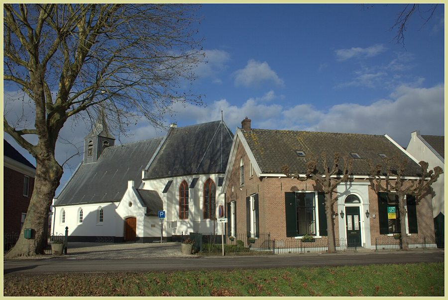
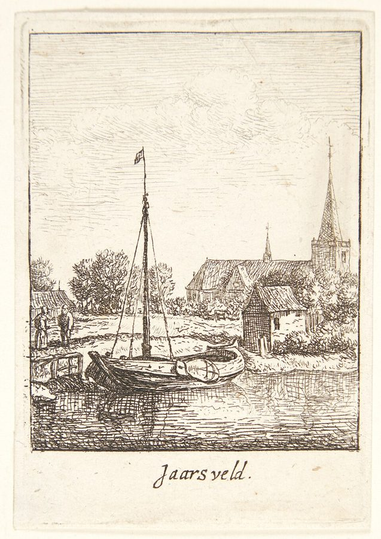
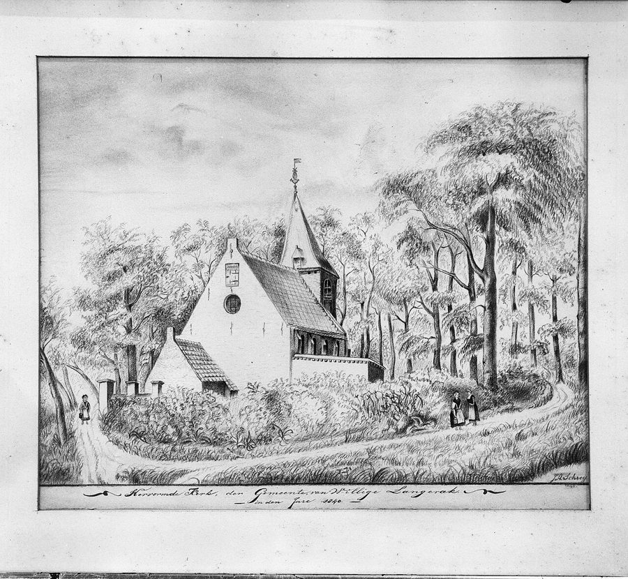
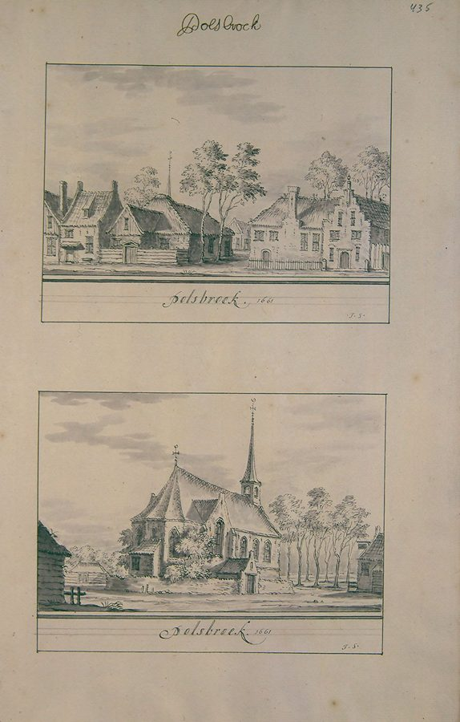
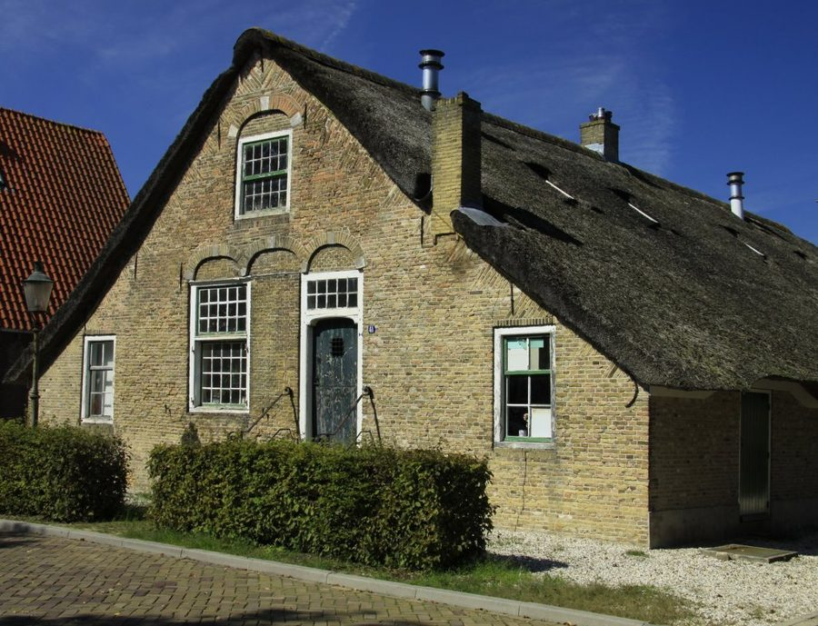

De familie Oosterom heette eerst Van Oostrum. Al meer dan driehonderd jaar woont ze in hetzelfde
stukje Nederland: de polders langs de Lek, tussen Lopik en Bergambacht. Ze heetten eerst Smetser, en waren bijna driehonderd
jaar lang schipper op de rivier, later boer. De namen Teunis en Arie komen in elke generatie terug.
De Lek rond 1745, met in de verte Lopik en Jaarsveld: zo zag het eruit toen Huijbert en Teunis van
Oostrum hier woonden. Tekening, Rijksmuseum, CC0.
De naam Van Oostrum komt van Oostrum (Osterhem, "de oostelijke woonplaats"), een verdwenen gehucht
bij Houten. Daar woonde een bekende familie Van Oostrum. Maar daar stammen wij niet van af. Onze familie heette
oorspronkelijk Smetser, en woonde al in de 16e eeuw bij Jaarsveld aan de Lek.
Volgens een genealogie van de familie (famkroon.nl)
is de oudste bekende voorvader Cornelis Smetser, geboren rond 1515. Zijn zoon Aryen en kleinzoon Cornelis
waren schipper en boer bij Jaarsveld. Rond 1580 huurde een Cornelis Ariensz Smetser het goed
Oversloot in het gerecht Jaarsveld, van jonkheer Carel Steur.
Zijn kleinzoon Adriaan Smetser (ca. 1595–1646) is de eerste die zich ook Van Oostrum noemde. Waarom
weten we niet: misschien door een huwelijk, een stuk land of een bijnaam. Zijn dochter Annetje trouwde in 1649 met
een burgemeester van Montfoort. Zijn zoon Arien (ca. 1630 – vóór 1669) was weer schipper en boer, en trouwde
met Grietgen Hendricks. Hun kinderen werden in Lopikerkapel gedoopt als Smetser: Arien (1653), Aeltjen
(1655), Hendrick (1659) en Petertgen (1662). Maar toen Aeltjen in 1680 trouwde, heette ze al "Aaltjen van
Oostrum". Vanaf dan bleef de naam Van Oostrum, en verdween Smetser.
Hun zoon was Jan Ariensz van Oostrum, schipper onder Jaarsvelderkapel. Hij werd bijna negentig en werd in
februari 1753 in de kerk begraven. Zijn zoon Huijbert is de eerste voorvader die we met akten zeker kennen.
"Den 8 dito [februari 1753] is begraven Jan Ariensz Oostrum, woonende onder Jaarsvelder Capel, in de kerk."
Begraafboek Lopikerkapel.
Hoe zeker is dit? Dat Huijbert een zoon van Jan Ariensz was, is vrijwel zeker. Dat Jan een zoon
was van Arien Smetser en Grietgen Hendricks, is zeer waarschijnlijk: Jan noemde zijn kinderen Arien, Aeltje,
Hendrik en Grietje, precies de namen uit die familie, en hij woonde en werkte op dezelfde plek. Zijn eigen doop is
alleen niet gevonden. De generaties vóór 1650 komen uit de genealogie van famkroon.nl en zijn nog niet door ons
gecontroleerd. Zie de bronnenpagina.
Lopikerkapel en Jaarsveld

Lopikerkapel, met het kerkje waar de Van Oostrums werden gedoopt, getrouwd en begraven. Foto: Jan Dijkstra,
Wikimedia Commons, CC BY-SA 4.0.
Huijbert van Oostrum woonde in de buurtschap Jaarsvelderkapel en ging naar de kerk in Lopikerkapel,
een klein dorp in de Lopikerwaard. In februari 1748 lieten hij en Ariaentje Boef uit Lopik zich in de kerk
"aantekenen" om te trouwen. Hij noemde zich toen Huybert Janse Oostrum: Huijbert, zoon van Jan.
"Op den 15 Febr. 1748 zyn hier in wettige ondertrou opgenomen Huybert Janse Oostrum wonende onder
Jaerselderkapel en Arijaentie Boef wonende te Lopik, getrout op den 3 Maert 1748." Trouwboek Lopikerkapel,
Het Utrechts Archief.
Vier weken na de bruiloft lieten ze al een dochtertje dopen. Ariaentje stierf anderhalf jaar later, in december
1749. In 1751 trouwde Huijbert met Willempje Jaarsveld, uit het dorp met dezelfde naam. Ze kregen minstens
vijf kinderen. In 1771 woonde Huijbert in Jaarsveld en stond hij bij een notaris borg voor de huur van ene Jan de
With. Hij werd in december 1792 begraven in de kerk van Lopikerkapel, in een gehuurd graf. De klok
luidde twee uur voor hem.
"4 dec. in de kerk in een huurgraft 't lyk van Huibert Oostrum, komt voor de kerk met 2 uur luyden,
kleed, ond(er) Jaarsv(elder) Capel – f 4-13." Begraafboek Lopikerkapel 1792.

Jaarsveld aan de Lek, ets van Jan van Almeloveen (eind 17e eeuw).
Statens Museum for Kunst, publiek domein.
Zijn jongste zoon Teunis (1762–1830) werd schipper. Hij woonde in Jaarsveld, een dijkdorp
direct aan de Lek. Schippers vervoerden vracht over de rivier, voor de boeren in de polders. In 1787 trouwde Teunis met
Geertje Dekker uit Noordeloos, aan de overkant van de rivier.
Ze kregen veertien kinderen. Vier zoons noemden ze Arie. De eerste drie zijn waarschijnlijk de baby's die in 1796 en 1800 werden begraven. De
vierde Arie, geboren in februari 1801, werd tachtig. In augustus 1830 stierven Geertje en Teunis kort na
elkaar, met drie dagen ertussen.
In die jaren veranderde ook de naam. In de oudere kerkboeken staat Van Oostrum. Rond 1800 valt het "van"
weg, en vanaf 1807 schrijft de dominee Oosterom. Later in Polsbroek schrijft de ambtenaar vaak Oostrom.
Van schipper naar boer: Polsbroek
In juni 1830 trouwde Arie Oosterom in Willige Langerak met Elisabeth Kooiman, de 19-jarige
dochter van een boer. In de huwelijksakte staat Arie, net als zijn vader, als schipper.
"Arie Oosterom, schipper, oud negen en twintig jaren, geboren en wonende te Jaarsveld, meerderjarige
zoon van Teunis Oosterom, schipper, en Geertje Dekker, zonder beroep." Huwelijksakte Willige Langerak 1830.

De kerk van Willige Langerak in 1840, tien jaar na de bruiloft van Arie en Elisabeth. Foto van de
tekening: Gerard Dukker, RCE / Wikimedia Commons, CC BY-SA 4.0.
Daarna ging Arie aan land. Het paar ging wonen in Zuid-Polsbroek, een paar kilometer verderop. In 1835 is
Arie daar bouwman (boer) en heet Elisabeth landbouwster. Zuid-Polsbroek was toen nog een eigen gemeente. Arie overleed in 1881 in huis nummer 57 in Polsbroek.
Geboorteakte van zoontje Teunis, Zuid-Polsbroek 1835: "Arie Oosterom, oud drie en dertig jaren, van
beroep bouwman". Onderaan zet Arie zelf zijn handtekening.

Polsbroek in de 18e eeuw, uit de atlas van Schoemaker.
Wikimedia Commons, publiek domein.
Hun zoon Teunis (1847–1915) was landbouwer in Polsbroek. Hij trouwde in 1870 met Adriana
Cornelia Lekkerkerker uit Benschop. Zij kregen in 24 jaar negentien kinderen. Acht van hen stierven als
baby. Een zoon Teunis werd drie keer geboren (1884, 1886 en 1895) en stierf drie keer binnen een paar maanden.
Zo ging het toen vaak op het platteland.
Geboorteakte van Pieter, Polsbroek 1875: vader Teunis Oosterom, 28 jaar, landbouwer, woont in huis
nummer 33. Getuige is zijn zwager Joris van der Heiden. Onderaan de handtekening "T. Oosterom".
Hun zoon Pieter (1875–1959) trouwde in 1907 ook met een Lekkerkerker: Willempje, dochter van
Arie Lekkerkerker en Steventje de With. In mei 1908 werd in Polsbroek hun eerste zoon geboren, weer een Arie.

Een oude boerderij in Polsbroek, zoals de Oosteroms er een hadden. Foto: Jan Dijkstra,
Wikimedia Commons, publiek domein.
Over de Lek: Bergambacht
De kerk van Bergambacht. Foto: Sailko,
Wikimedia Commons, CC BY 3.0.
Kort daarna verhuisden Pieter en Willempje naar Bergambacht, aan de andere kant van de Lek, in de
Krimpenerwaard. Vanaf 1909 werden daar hun kinderen geboren. Pieter was er boer (bouwman) en werd 84 jaar.
Arie Oosterom (1908–1988) groeide op in Bergambacht. Hij trouwde met Johanna Jacoba de Jong
(1917–1994) en kreeg vijf kinderen. Zij en hun kinderen leven nog of zijn pas kort geleden overleden. Daarom
staan ze niet met naam op deze site.